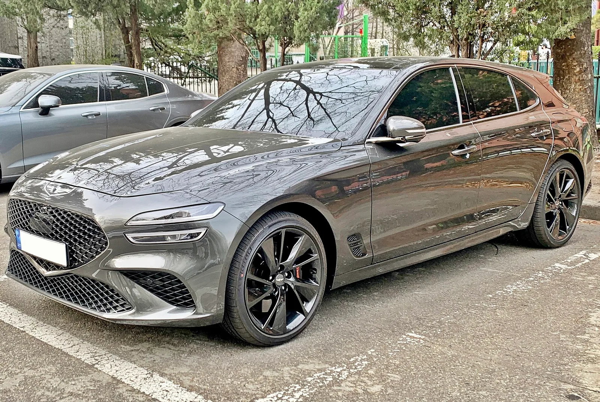
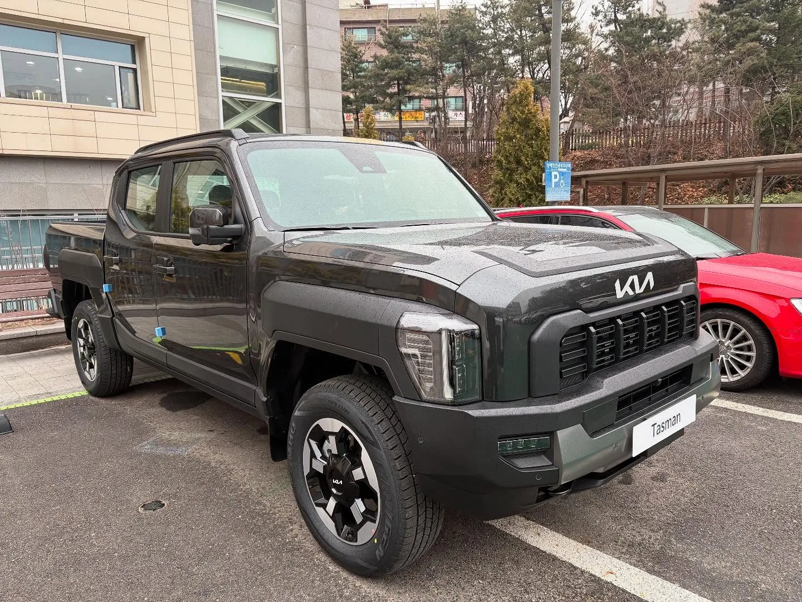
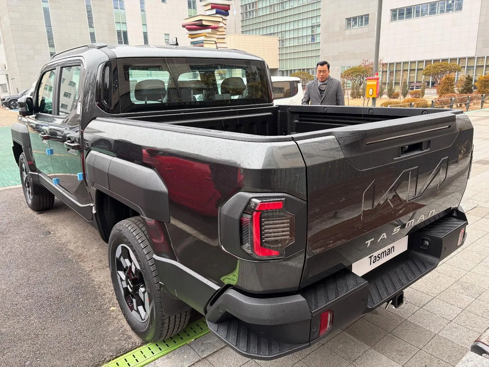

▲ 제네시스 G80. 10월 보도에서 가솔린은 기본 3주, 재고 배정 시 즉시 출고가 가능하다고 전해졌다 ⓒ 제네시스
"색상 바꿨더니 2주 추가." 오토트리뷴이 10월 2일 보도한 제네시스 출고 일정의 한 줄이다. 같은 날 같은 매체가 낸 기아 기사의 제목은 "계약했더니 내년 출고"였다. 두 기사를 나란히 놓고 보면 10월 신차 계약의 승부는 "어떤 차를 사느냐"보다 "어떤 색·트림·파워트레인을 고르느냐"에서 갈린다. 이 글은 두 보도의 수치를 카프리즘이 직접 날짜로 환산하고, 9월 보도와 비교하고, 목적별로 "가장 빨리 받는 조합"을 골라 보았다.
현대차 차종의 출고 일정은 이 글에서 반복하지 않는다. 현대차는 현대차 출고 적체 기사와 2027년 이월 납기 가이드에서 다뤘다.
1. 먼저 확인할 것 — 이 "대기 기간"은 공식 발표일까
납기 숫자를 인용하기 전에 출처부터 가려야 한다. 카프리즘이 오토트리뷴 두 기사(제네시스 박성한 기자, 기아 이우진 기자, 모두 2026년 10월 2일 입력)를 확인한 결과는 다음과 같다.
| 항목 | 제네시스 기사(idxno=46089) | 기아 기사(idxno=46104) |
|---|---|---|
| 수치의 출처 표기 | 본문에서 산출 근거(공식 발표·영업점 집계 등)를 밝히지 않음(제조사 공식 표 아님) | 본문에서 산출 근거를 밝히지 않음(제조사 공식 표 아님) |
| 재고·즉시 출고 | "배정 가능한 재고가 있으면 즉시 출고도 가능하다", 9월 마감 기준 재고 수치 제시 | 즉시 출고·재고 언급 없음(PV5 "인수 대기 2주 내외"만 표기) |
| 색상·옵션 영향 | 2WD·스포츠(그래파이트 포함)·외장 매트 컬러 +0.5개월("개월" 표기 확인), 마그마 도장 +2주(유광 색상 적용)·검사 +3주 등 구체 표기 | 카니발 4인승 "시트 공급 문제", 7·9인승 풀옵션 제외 +2개월, X-Line 일부 사양 지연 가능, 타스만 순정 액세서리 +10일, K8 시그니처 블랙 "매월 첫째 주 생산" 등 표기 |
| 사진 출처 | 제네시스 | 기아·HMG 저널 |
📍 "공식"이라고 단정하지 않는 이유
제네시스와 기아는 차종별 출고 대기 기간을 정기적으로 공식 발표하는 체계를 두고 있지 않은 것으로 보인다(카프리즘이 제네시스 구매 FAQ와 기아 출하·탁송 안내 페이지를 열어 보았으나 차종별 대기 기간표는 없었다. 제네시스 FAQ는 "차량 계약 후 예상 납기일"을 "계약하신 지점(대리점)에서 확인 가능"하다고만 안내하고, 기아 페이지는 출하 유형과 인도 절차만 설명한다). 따라서 이 숫자는 "계약 시점에 영업 현장에서 안내되는 예상 납기"일 가능성이 높지만, 두 기사가 산출 근거를 적지 않았으므로 어느 쪽인지 확정하지 않는다. 개인별 실제 인도일은 지점·재고·생산 배정에 따라 달라진다.
비교를 위해 카프리즘이 9월에 정리한 기아 9월 납기표와 제네시스 마그마 출고 지연 기사의 수치를 "전월 값"으로 쓴다. 이 값들도 같은 매체 계열의 보도에서 가져온 것이므로 같은 한계가 있다.
2. 제네시스 10월 출고표 — 대부분 3주, 9월보다 짧아졌다
10월 보도의 제네시스 표를 그대로 옮기고, 카프리즘이 계약일 10월 5일 기준 예상 인도일을 단순 가산(1개월=달력상 한 달, 1주=7일)으로 붙였다. 전월 값은 9월 보도(G80·GV80 기본 1개월, GV70 1개월, GV60 마그마 2개월 이상)다.
| 모델·파워트레인 | 기본 대기(10월 보도) | 추가 조건 | 기본 기준 예상 인도 | 9월 보도 대비 |
|---|---|---|---|---|
| G70 전 사양(슈팅 브레이크 포함) | 3주 | BTO 주문 생산 +1주(총 4주) | 10/26 (BTO면 11/2) | 9월 표에 없음(확인 못 함) |
| G80 가솔린 | 3주 | 재고 배정 시 즉시 출고 | 10/26 (재고면 즉시) | 1개월 → 3주 |
| G80 전기차 | 3주(원문 재확인: 가솔린·전기차 모두 기본 3주) | - | 10/26 | 9월 표에 없음(확인 못 함) |
| G90 전 사양 | 1개월(재고 배정 시 즉시 출고, 재고 500대) | 롱휠베이스·블랙 +1주 | 11/5 (+1주면 11/12) | 9월 표에 없음(블랙 에디션 별도 지연 언급) |
| GV70 가솔린 | 3주 | 2WD·스포츠(그래파이트 포함)·외장 매트 컬러 +0.5개월 | 10/26 (가산 시 약 11/10) | 1개월 → 3주 |
| GV70 전기차 | 1개월 | - | 11/5 | 1개월 → 1개월(변화 없음) |
| GV80 전 사양(쿠페 포함) | 3주 | - | 10/26 | 1개월 → 3주 |
| GV60 일반 | 1개월 | - | 11/5 | 9월 표에 없음 |
| GV60 마그마 | 2개월 | 도장 +2주, 검사 +3주 | 12/5 | 2개월 이상 → 2개월 |
핵심은 볼륨 모델의 가솔린이 9월의 "3~4주"에서 10월 "3주"로 한 단계 짧아졌다는 점이다(보도 표기 기준). G80 가솔린 재고가 9월 마감 때 2,500대 남아 있다는 보도와 같은 방향의 신호지만, 재고 수치와 납기 단축의 인과관계는 기사에서 설명되지 않았으므로 카프리즘의 해석으로만 남긴다.
▲ 제네시스 G80. 10월 보도에서 가솔린은 기본 3주, 재고를 배정받으면 즉시 출고도 가능하다고 전해졌다(행사 연출 사진, 연식·사양은 확정하지 않음) ⓒ 제네시스

▲ 제네시스 G70 슈팅 브레이크(주차 차량). 10월 보도에서 슈팅 브레이크를 포함한 G70 전 사양이 기본 3주, 주문 생산(BTO)은 1주가 더해져 4주다(연식·사양은 확정하지 않음) ⓒ Benespit, Wikimedia Commons (CC BY-SA 4.0)
3. 색상·트림·옵션이 만드는 추가 대기 — "2주"의 정체
제목의 "색상 바꿨더니 2주 추가"는 보도 본문 기준으로 GV70의 매트(무광) 컬러 +0.5개월과 GV60 마그마의 도장 +2주를 가리키는 것으로 읽힌다. 원문을 다시 열어 확인한 결과 GV70 가산은 "주"가 아니라 "0.5개월" 표기이며(2WD·스포츠·외장 매트 컬러, 스포츠에는 그래파이트 사양 포함), 카프리즘은 이를 15일로 계산한다. 0.5개월은 약 2주라 마그마 도장 +2주와 크기는 비슷하지만, 기사가 둘을 같은 공정이라고 설명한 것은 아니다(카프리즘의 해석). 중요한 것은 가산이 "누적"된다는 점이다.
| 조합 | 계산 | 예상 대기 | 예상 인도 |
|---|---|---|---|
| GV70 가솔린 기본(유광) | 3주 | 3주 | 10/26 |
| GV70 가솔린 + 매트 컬러 | 3주 + 0.5개월(약 15일) | 약 5주 | 약 11/10 |
| GV70 가솔린 + 2WD·스포츠·매트 모두 | 보도상 "0.5개월 추가 조건"으로만 표기, 중복 가산 여부 확인 못 함 | 최소 약 5주, 그 이상일 수 있음 | 11/10 이후 |
| G90 기본 | 1개월 | 약 4.3주 | 11/5 |
| G90 롱휠베이스 또는 블랙 | 1개월 + 1주 | 약 5.3주 | 11/12 |
| G70 가솔린 기본(재고) | 3주 | 3주 | 10/26 |
| G70 가솔린 BTO | 3주 + 1주 | 4주 | 11/2 |
| GV60 일반 | 1개월 | 약 4.3주 | 11/5 |
| GV60 마그마 | 일반 약 4.3주 + 도장 2주 + 검사 3주 | 약 9.3주(보도 "2개월") | 12/5 |
마그마 계산은 보도 수치끼리 검증이 된다. 일반 GV60이 1개월(약 4.3주)이고 마그마가 도장 2주와 검사 3주를 더 쓴다면 약 9.3주, 달력으로 2개월이 조금 넘는다. 보도의 "2개월"은 이 합계를 반올림한 값으로 보인다. 또 보도는 "도장 추가 기간은 유광 색상에 적용된다"고 적었는데, 매트 컬러가 별도로 어떻게 처리되는지는 이 문장만으로 확인되지 않는다.

▲ 제네시스 GV60 마그마(전시 차량). 10월 보도 기준 도장 +2주, 검사 +3주로 대기 2개월이다 ⓒ Damian B Oh, Wikimedia Commons (CC BY-SA 4.0)
이전 기사에서 정리한 대로 이런 가산은 "특화 사양은 주문 생산 비중이 커진다"는 딜러 설명에 기대고 있다. 이번 10월 보도는 그 설명을 반복하지 않고 수치만 제시했으므로, 왜 늘어나는지는 확인하지 못한 채 "늘어난다"는 사실만 인용한다.
▲ 제네시스 GV70. 10월 보도에서 가솔린은 기본 3주지만 2WD·스포츠·매트 컬러를 고르면 0.5개월이 붙는다(이 차량의 색상이 매트인지는 확정하지 않음) ⓒ Damian B Oh, Wikimedia Commons (CC BY-SA 4.0)
4. 즉시 출고 노릴 재고 — 9월 마감 기준 숫자
제네시스 기사는 9월 마감 기준 재고로 G80 가솔린 2,500대, G90 500대, GV70 가솔린 1,500대를 제시했다. 앞서 9월 보도는 GV70 선배정 물량을 약 1,600대로 전했는데, 두 숫자가 같은 기준인지는 확인하지 못했지만 단순 비교하면 1,500 - 1,600 = -100대(-6.25%)다. 재고가 "있다"는 것이 곧 "내가 원하는 색·옵션이 있다"는 뜻은 아니다. 기사는 재고의 색상·트림 구성을 공개하지 않았다.
| 모델 | 재고(9월 마감) | 10월 기본 대기 | 카프리즘 해석 |
|---|---|---|---|
| G80 가솔린 | 2,500대 | 3주 | 재고 폭이 가장 넓어 선택지가 많을 것으로 추정(구성은 미공개) |
| G90 | 500대 | 1개월 | 재고 있어도 롱휠베이스·블랙 구성은 +1주 대상, 재고 내 구성 확인 필요 |
| GV70 가솔린 | 1,500대 | 3주 | 유광·기본 사양 재고라면 즉시 출고, 매트·2WD·스포츠는 재고 여부에 따라 달라짐 |
| GV80 | 재고 수치 미제시 | 3주 | 재고 규모를 확인하지 못함 |

▲ 제네시스 GV80. 10월 보도에서 전 사양 기본 3주로 표기됐지만 재고 수치는 제시되지 않았다(연식·사양은 확정하지 않음) ⓒ Benespit, Wikimedia Commons, 파일명 24 Genesis GV80 FL 1.jpg (CC BY-SA 4.0)

▲ 제네시스 G90(해외 번호판 차량). 10월 보도에서 기본 1개월, 롱휠베이스·블랙은 1주가 추가된다 ⓒ Wikimedia Commons(촬영자 확인 못 함, 파일 원본 미확인)
5. 기아 10월 출고표 — 레이·EV5는 여전히 내년, 전기차 일부는 짧아졌다
기아 기사는 같은 브랜드 안에서도 대기가 2주부터 10개월까지 벌어진다고 전했다. 카프리즘이 9월 보도(앞선 기사 값)와 비교해 변화량을 계산했다. 개월 단위 표기는 오토트리뷴 기사 그대로이며, 달력 환산은 10월 5일 계약 기준 단순 가산이다.
| 차종 | 10월 보도 | 9월 보도 | 변화 | 10/5 계약 시 예상 인도 |
|---|---|---|---|---|
| K5 | 4~5주(전 사양) | 4~5주 | 변화 없음 | 11/2~11/9 |
| K8 | 4~5주(시그니처 블랙은 매월 첫째 주 생산) | 4~5주 | 변화 없음 | 11/2~11/9 |
| K9 | 1개월 | 2개월 | 1개월 단축 | 11/5 |
| 니로 하이브리드 | 4~5주 | 4~5주 | 변화 없음 | 11/2~11/9 |
| 쏘렌토 하이브리드·가솔린 | 하이브리드 4~5주 / 가솔린 5~6주 | 하이브리드 4~5주 / 가솔린 5~6주 | 변화 없음 | 11/2~11/16 |
| 카니발 일반(가솔린·하이브리드) | 1.5개월(X-Line 중 사이드스텝+LED 테일게이트 램프 적용 사양은 일부 지연 가능) | 가솔린 5~6주 / 하이브리드 2.5개월 | 하이브리드 1개월 단축, 가솔린은 5~6주에서 1.5개월로 소폭 늘어난 표기 | 약 11/20 |
| 카니발 하이리무진·하이루프 4인승 | 5개월(시트 공급 문제) | 6개월 | 1개월 단축 | 약 3/5(2027) |
| 카니발 하이리무진·하이루프 7·9인승 | 기본 2개월, 풀옵션 제외 사양은 +2개월(약 4개월) | 2개월 | 기본 기준 변화 없음(9월 값의 풀옵션 조건은 확인 못 함) | 풀옵션 12/5 / 풀옵션 제외 약 2/5(2027) |
| 스포티지 가솔린·하이브리드 | 2.5개월 | 3개월 | 0.5개월 단축 | 약 12/20 |
| 스포티지 LPG | 3개월 | 3.5개월 | 0.5개월 단축 | 약 1/5(2027) |
| 셀토스 | 3.5개월(전 사양) | 3.5개월 | 변화 없음 | 약 1/20(2027) |
| EV3 | 5개월 | 5개월 | 변화 없음 | 약 3/5(2027) |
| EV4 | 2개월 | 5개월 | 3개월 단축 | 12/5 |
| EV5 | 6개월(전 사양) | 7개월 | 1개월 단축 | 약 4/5(2027) |
| EV6 | 2개월 | 4개월 | 2개월 단축 | 12/5 |
| EV9 | 2개월 | 2.5개월 | 0.5개월 단축 | 12/5 |
| 레이 가솔린 | 10개월 | 10개월 | 변화 없음 | 약 8/5(2027) |
| 레이 EV | 8개월 | 10개월 | 2개월 단축 | 약 6/5(2027) |
| 타스만 | 기본·사이드스텝 단독·스포츠바·베드 커버 1개월 / 오픈베드 2개월(순정 액세서리 장착·배송 평균 +10일) | 확인 못 함 | 비교 불가 | 11/5(액세서리 장착 시 약 11/15) / 12/5(약 12/15) |
| PV5 | 순정 액세서리·오픈베드 6개월, 인수 대기 2주 내외 | 패신저·카고 5개월 / 오픈베드 4개월 | 표기 기준이 달라 직접 비교 불가 | 약 4/5(2027, 6개월 표기 사양) |
눈에 띄는 변화는 전기차다. EV4가 5개월에서 2개월로, EV6가 4개월에서 2개월로 줄었다. 반면 EV5와 EV3, 레이는 여전히 반년 안팎에서 열 달까지 걸린다. 같은 SUV라도 쏘렌토 하이브리드는 4~5주인데 스포티지는 2.5개월로, 인기와 생산 배분 차이가 대기에 그대로 반영된다. 다만 기사가 단축의 이유를 설명하지 않았으므로 "EV4·EV6는 수요가 줄었다"는 식의 단정은 하지 않는다.

▲ 기아 레이. 10월 보도 기준 가솔린 10개월, EV 8개월로 계약하면 2027년에 받는다(사진은 가솔린·EV 구분을 확정하지 않음) ⓒ 기아

▲ 기아 카니발. 일반형은 10월 보도 1.5개월이지만 하이리무진·하이루프 4인승은 5개월이다(사진 차량의 하이리무진 여부는 확정하지 않음) ⓒ Ethan Llamas, Wikimedia Commons (CC BY-SA 4.0)
6. 기아는 "트림·사양"이 대기를 가른다 — 카니발 4인승과 K8 블랙
기아 기사에서 색상·사양이 대기에 영향을 주는 사례는 제네시스보다 적다. 확인되는 항목은 다음 여섯 가지다. 나머지 차종은 "전 사양" 같은 표기로 사양별 차이를 알 수 없었다.
| 차종·사양 | 보도된 영향 | 카프리즘 해석 |
|---|---|---|
| 카니발 하이리무진·하이루프 4인승 | 5개월, "시트 공급 문제로 생산 차질" | 같은 하이리무진도 7·9인승은 풀옵션 기준 2개월이므로 좌석 수가 변수. 풀옵션 7·9인승과 비교하면 4인승이 3개월(5개월 - 2개월), 풀옵션 제외 7·9인승(약 4개월)과 비교하면 1개월을 더함 |
| 카니발 하이리무진·하이루프 7·9인승 풀옵션 제외 | 기본 2개월에 "풀옵션을 제외한 사양은 2개월이 추가" | 합산 약 4개월. 10/5 계약 시 약 2/5(2027), 연내 인도 불가. "기본 2개월"이 풀옵션 기준이라는 해석은 문장 구조에 따른 카프리즘의 읽기이며, 구체 사양 범위는 기사에 없음 |
| K8 시그니처 블랙 | "매월 첫째 주 생산" | 월 1회 생산이라 계약 시점이 첫째 주를 놓치면 한 달 가까이 밀릴 수 있다는 구조(추정, 기사에 계산 없음) |
| 카니발 X-Line 특정 사양 | "월별 작업 상황에 따라 출고가 일부 지연될 수 있음" | 일반 카니발 1.5개월 가운데 X-Line에서 사이드스텝과 LED 테일게이트 램프를 함께 적용한 사양에 한정된 지연 가능성. 지연 폭 수치 없음, 확인하지 못함 |
| 타스만 순정 액세서리 | "장착과 배송에 평균 10일 내외가 추가" | 기본·사이드스텝 단독·스포츠바·베드 커버 1개월에 +10일이면 약 1.3개월(10/5 계약 시 약 11/15). 오픈베드 2개월에도 붙는지는 기사가 명시하지 않아 확정하지 않음 |
| PV5 순정 액세서리 | "장착 작업과 배송에 추가 시간" | 인수 대기 2주 내외와 순정 액세서리·오픈베드 6개월이 한 기사에서 병기돼 어느 구성이 얼마인지 단정하기 어려움 |
카니발 4인승 사례는 풀옵션 7·9인승 대비 "인원수 하나가 3개월"(풀옵션 제외 7·9인승 대비로는 1개월)이라는 점에서 제네시스의 색상 2주보다 크다. 가장 빠른 길은 같은 차종의 다른 사양을 찾는 것이다. 스포티지도 파워트레인에 따라 가솔린·하이브리드 2.5개월, LPG 3개월로 0.5개월 차이가 난다.
▲ 기아 카니발 하이리무진(하이루프형 흰색 차량). 10월 보도에서 7·9인승은 기본 2개월, 풀옵션을 제외한 사양은 2개월이 추가되고 4인승은 5개월이다(사진 차량의 좌석 수·옵션은 확정하지 않음) ⓒ Ethan Llamas, Wikimedia Commons (CC BY-SA 4.0)
타스만은 사양 구성에 따라 대기가 갈린다. 원문 기준으로 기본 사양과 사이드스텝 단독·스포츠바·베드 커버 사양은 1개월, 오픈베드는 2개월이며, 순정 액세서리 장착과 배송에 평균 10일 내외가 추가된다. 10/5 계약이면 1개월 사양은 11/5, 액세서리를 달면 약 11/15, 오픈베드는 12/5(액세서리 포함 시 약 12/15)로 계산되어 모두 연내 인도권이다. 다만 오픈베드에 액세서리 10일이 중복으로 붙는지는 기사가 밝히지 않았다.

▲ 기아 타스만(주차 차량). 10월 보도에서 기본 사양은 1개월, 순정 액세서리 장착·배송은 평균 10일 내외가 추가된다(사진 차량의 사양·액세서리 장착 여부는 확정하지 않음) ⓒ Avante2025, Wikimedia Commons (CC BY 4.0)

▲ 기아 타스만 뒷모습(적재함이 드러난 픽업형 차량). 10월 보도에서 오픈베드 사양은 2개월이다(사진 차량이 오픈베드 사양인지는 확정하지 않음) ⓒ Avante2025, Wikimedia Commons (CC BY 4.0)

▲ 기아 스포티지. 10월 보도 기준 가솔린·하이브리드 2.5개월, LPG 3개월로 연내 출고의 경계에 있다(사진의 파워트레인은 확정하지 않음) ⓒ 기아

▲ 기아 셀토스(전시 차량). 10월 보도에서 전 사양 3.5개월로 계약하면 2027년 1월 하순에 받는 계산이다 ⓒ Peżot, Wikimedia Commons (CC BY-SA 4.0)
7. 연내 출고 경계선 — 10월 5일 계약 기준 마감표
2026년 안에 받으려면 10월 5일 계약 기준 대기가 약 12월 26일 전후(약 2.7개월)까지여야 한다. 위 표를 12월 31일까지 남은 여유로 환산하면 다음과 같다.
| 구분 | 차종·사양 | 예상 인도 | 12/31까지 여유 | 판정 |
|---|---|---|---|---|
| 여유 큼(5주 이상) | K5·K8·니로 HEV·쏘렌토·G80·GV80·GV70(기본) | 10/26~11/16 | 45일 이상 | 안정권 |
| 여유 중간 | 제네시스 마그마, 카니발 일반 1.5개월, EV4·EV6·EV9, 카니발 7·9인승(풀옵션 기준) | 11/20~12/5 | 26~41일 | 안정권, 지연 시에도 연내 가능 |
| 경계선 | 스포티지 가솔린·하이브리드 2.5개월 | 약 12/20 | 약 11일 | 표기가 0.5개월만 늘어도 해를 넘김 |
| 연내 불가에 가까움 | 스포티지 LPG 3개월 | 약 1/5(2027) | -5일(초과) | 해넘김 유력 |
| 2027년 확정권 | 셀토스 3.5개월, 카니발 7·9인승 풀옵션 제외 약 4개월, 카니발 4인승·EV3 5개월, EV5·PV5 6개월, 레이 EV 8개월, 레이 가솔린 10개월 | 1월 하순~8월 | 초과 | 2027년 인도 전제 |
계산상 가장 아슬아슬한 차종은 스포티지 가솔린·하이브리드다. 9월 보도(3개월)대로라면 1월 5일이었지만 10월 보도(2.5개월)는 12월 20일로 연내 인도가 가능해졌다. 단, 하루 이틀이 아니라 "0.5개월 표기 오차"를 감안해야 하는 구간이다. 보도 수치가 영업 현장 추정이라면 이 11일의 여유는 안전마진으로 보기 어렵다는 것이 카프리즘의 판단이다.
7-1. 계약 시점별 인도일 시뮬레이션 — 10/5·10/15·10/31에 계약하면
보도 수치는 "10월 계약 기준"이라 10월 안에서는 같은 대기 기간이 유지된다고 가정(추정)하고, 계약일을 세 시점으로 나눠 인도일을 계산했다. 수식은 인도일 = 계약일 + 개월(달력상, 월말은 말일로 보정) + 0.5개월(15일) + 주(7일) + 일이다. 휴일·등록 일정·탁송은 반영하지 않았고, 아래 값은 node로 계산해 검산했다.
| 차종·사양 | 대기 가정 | 10/5 계약 | 10/15 계약 | 10/31 계약 | 연내 판정 |
|---|---|---|---|---|---|
| G80 가솔린·GV70 기본 | 3주 | 10/26 | 11/5 | 11/21 | 10/31 계약도 안정권 |
| GV70 가솔린 + 매트 컬러 | 3주 + 0.5개월 | 11/10 | 11/20 | 12/6 | 안정권 |
| G90 기본 / 롱휠베이스·블랙 | 1개월 / 1개월+1주 | 11/5 / 11/12 | 11/15 / 11/22 | 11/30 / 12/7 | 안정권 |
| G70 BTO | 4주 | 11/2 | 11/12 | 11/28 | 안정권 |
| K5·K8·니로 HEV(상한) | 5주 | 11/9 | 11/19 | 12/5 | 안정권 |
| 카니발 일반(가솔린·하이브리드) | 1.5개월 | 11/20 | 11/30 | 12/15 | 10/31 계약도 연내 가능 |
| 타스만 기본 / 순정 액세서리 장착 | 1개월 / +10일 | 11/5 / 11/15 | 11/15 / 11/25 | 11/30 / 12/10 | 안정권 |
| GV60 마그마·EV4·EV6·카니발 7·9인승(풀옵션) | 2개월 | 12/5 | 12/15 | 12/31 | 10/31 계약은 마감일 당일, 여유 0일 |
| 스포티지 가솔린·하이브리드 | 2.5개월 | 12/20 | 12/30 | 2027/1/15 | 10/15 계약부터 여유 1일, 10/31은 해넘김 |
| 카니발 7·9인승 풀옵션 제외 | 4개월 | 2027/2/5 | 2027/2/15 | 2027/2/28 | 어느 시점에도 해넘김 |
읽는 법은 단순하다. 같은 "2개월" 차종이라도 10/31에 계약하면 인도 예정일이 12/31 당일이라 하루만 밀려도 해를 넘긴다. 스포티지 가솔린·하이브리드는 10/15 계약만 돼도 12/30으로 마진이 하루로 줄고, 10/31이면 2027년 1월 중순이다. 반대로 3주·4주 차종은 월말 계약도 11월~12월 초 인도라 시점에 덜 민감하다. 이 시뮬레이션은 "10월 계약 기준 대기가 월 중에는 변하지 않는다"는 가정에 의존하므로, 월 중 생산 배분이 바뀌면 값이 달라질 수 있다.
7-2. 사양 가산 누적 계산기 — 옵션을 겹치면 얼마나 늘까
보도는 가산 항목을 "있다"고만 적었을 뿐 서로 겹칠 때 어떻게 되는지는 밝히지 않았다. 아래 표는 인도일 = 계약일 + 기본 대기 + Σ(선택 사양의 가산)이라는 단순 합산을 적용한 값이며, "항목별 중복 가산"으로 표시한 줄은 카프리즘의 가정이지 보도 내용이 아니다.
| 조합 | 계산식 | 10/5 계약 | 10/31 계약 | 근거 구분 |
|---|---|---|---|---|
| GV70 + 매트 | 3주 + 0.5개월 | 11/10 | 12/6 | 보도 수치 합산 |
| GV70 + 매트 + 스포츠(항목별 중복 가산) | 3주 + 0.5개월 × 2 | 11/25 | 12/21 | 가정(보도는 "0.5개월 추가 조건"만 표기) |
| G90 롱휠베이스 + 블랙(항목별 중복 가산) | 1개월 + 1주 × 2 | 11/19 | 12/14 | 가정 |
| G70 BTO | 3주 + 1주 | 11/2 | 11/28 | 보도 수치 합산 |
| GV60 마그마(일반 + 도장·검사 합산) | 1개월 + 2주 + 3주 | 12/10 | 2027/1/4 | 보도 "2개월(12/5)"보다 5일 길어 반올림 표기로 추정 |
| 카니발 하이리무진 7·9인승 풀옵션 제외 | 2개월 + 2개월 | 2027/2/5 | 2027/2/28 | 보도 수치 합산(풀옵션 범위 미확인) |
| 타스만 오픈베드 + 순정 액세서리 | 2개월 + 10일 | 12/15 | 2027/1/10 | 가정(중복 적용 여부 미확인) |
핵심은 두 가지다. 첫째, GV70처럼 3주에서 출발하는 차종은 가산이 두 번 겹쳐도 12/31까지 여유가 있지만, 마그마·타스만 오픈베드처럼 이미 2개월인 차종에 10일~5주가 더해지면 10/5 계약에서도 연내 마진이 크게 줄어든다(마그마 합산 12/10 기준 21일, 타스만 오픈베드+액세서리 12/15 기준 16일). 둘째, 가산이 "한 번 붙는지 항목마다 붙는지"는 보도로 알 수 없으므로 영업점에서 사양을 확정한 뒤 서면으로 납기를 받아 두는 것이 안전하다.
7-3. 연내 인도 마감선(12/31) 역산 — 늦어도 언제까지 계약해야 하나
거꾸로 계산하면 "12/31에 받으려면 최종 계약일이 언제인가"가 나온다. 수식은 최종 계약일 = 12/31 - 대기 기간(월은 달력 기준, 월말 보정, 0.5개월=15일, 7-1 정방향과 같이 월을 먼저 더하고 일을 나중에 더하는 순서로 역산)이고, 출고 후 등록·보험 준비를 위한 7일 안전마진을 둔 날짜를 병기했다.
| 대기 기간 | 대표 차종 | 최종 계약일(마진 0) | 7일 마진 적용 | 10/5부터 남은 일수 |
|---|---|---|---|---|
| 3주 | G80 가솔린·GV70 기본·GV80 | 12/10 | 12/3 | 66일 |
| 4주 | G70 BTO | 12/3 | 11/26 | 59일 |
| 5주 | K5·K8·니로·쏘렌토 HEV 상한 | 11/26 | 11/19 | 52일 |
| 1개월 | G90 기본·GV60 일반·타스만 기본 | 11/30 | 11/23 | 56일 |
| 1개월 + 1주 | G90 롱휠베이스·블랙 | 11/24 | 11/17 | 50일 |
| 1.5개월 | 카니발 일반 | 11/16 | 11/9 | 42일 |
| 2개월 | 마그마·EV4·EV6·카니발 7·9인승(풀옵션) | 10/31 | 10/24 | 26일 |
| 2개월 + 10일 | 타스만 오픈베드 + 순정 액세서리 | 10/21 | 10/14 | 16일 |
| 2.5개월 | 스포티지 가솔린·하이브리드 | 10/16 | 10/9 | 11일 |
| 3개월 | 스포티지 LPG | 9/30(이미 지남) | 9/23 | 해당 없음 |
결론은 "이번 달 안에 결정해야 하는 차종"이 분명하다는 점이다. 2개월 차종(마그마·EV4·EV6)은 10/31이 마지노선이고, 스포티지 가솔린·하이브리드는 10/16이 한계라 보도 수치 기준으로는 열흘 남짓 남았다. 반면 3주 차종은 12월 10일까지도 연내 인도가 가능해 시간이 넉넉하다. 이 역산은 보도 수치가 맞고 월 중 변동이 없다는 전제이며, 실제 인도일은 지점 안내가 우선이다. 연내 계약 시점을 더 따지려면 기아 전기차 연내 계약 시점 기사, 카니발 하이리무진 사양을 고르는 단계라면 카니발 4인승 대기 기사, 차종 간 대기 순위는 대기 기간 TOP 10 기사를 함께 볼 수 있다.
8. "가장 빨리 받는 조합" 선택 가이드
위 수치로 목적별 추천 조합을 골랐다. 이 표는 보도 수치를 근거로 한 카프리즘의 정리이며, 계약 전 영업점에서 해당 사양의 확정 납기와 재고 여부를 서면·문자로 확인해야 한다.
| 목적 | 추천 조합 | 예상 대기 | 피할 선택 | 근거 |
|---|---|---|---|---|
| 당장(2~3주) 받고 싶다 | 제네시스 G80 가솔린, 기본 유광 색상, 재고 배정 | 즉시~3주 | 주문 생산(BTO) 사양 | G80 재고 2,500대, 재고 배정 시 즉시 출고 보도 |
| 제네시스 SUV를 빨리 | GV80 또는 GV70 가솔린, 유광 색상·4WD·기본 사양 | 3주 | GV70 매트 컬러·2WD·스포츠(+0.5개월) | GV80 전 사양 3주, GV70 가산 조건 보도 |
| 제네시스 세단 플래그십 | G90 기본 사양(재고 500대 내 구성) | 1개월 | 롱휠베이스·블랙(+1주) | G90 가산 조건 보도 |
| 제네시스 전동화 | G80 전기차(3주) 또는 GV70 전기차(1개월) | 3주~1개월 | 마그마(2개월) | 10월 표기 |
| 기아 4~5주 안에 | K5·K8(일반 색상)·니로 하이브리드·쏘렌토 하이브리드 | 4~5주 | K8 시그니처 블랙(월 1회 생산) | K8 "매월 첫째 주 생산" |
| 기아 대형 패밀리 | 카니발 일반(가솔린·하이브리드) | 1.5개월 | 하이리무진·하이루프 4인승(5개월) | 4인승 시트 공급 문제 표기 |
| 카니발 하이리무진 7·9인승을 연내 | 풀옵션 구성 | 2개월(12/5) | 풀옵션 제외 사양(+2개월, 약 4개월)·4인승(5개월) | 원문 "풀옵션을 제외한 사양은 2개월이 추가" |
| 기아 전기차를 연내 | EV4·EV6·EV9 | 2개월 | EV5(6개월)·EV3(5개월) | 10월 표기 |
| 기아 SUV 연내(빠듯) | 스포티지 가솔린·하이브리드 | 2.5개월 | 스포티지 LPG(3개월) | 12/20 예상, 여유 약 11일 |
| 가격·실속 우선, 시간 여유 | 레이·EV5·EV3·셀토스 | 3.5~10개월 | - | 2027년 인도 전제 |
✅ 계약 전 체크포인트
· 영업점에 "이 사양·색상의 재고가 지금 있는가"부터 묻는다(제네시스는 재고 배정 시 즉시 출고 보도)
· 매트 컬러·2WD·스포츠·롱휠베이스·블랙·4인승처럼 가산이 붙는 항목은 납기를 사양 단위로 문자로 받아 둔다
· 연내 인도가 목표라면 12/20 전후가 예상 인도인 차종(스포티지)은 해넘김 가능성을 가정한다
· 이 표의 숫자는 산출 근거가 설명되지 않은 매체 보도이므로 영업점 안내를 최종 기준으로 삼는다
9. 확인하지 못한 것 — 이 표의 한계
| 항목 | 상태 |
|---|---|
| 수치의 공식 발표 여부 | 두 기사 모두 산출 근거 설명 없음(말미에 "10월 기준 자료" 식 표기가 있더라도 제조사 공식 표는 아님). 제네시스 FAQ는 "계약하신 지점(대리점)에서 확인 가능", 기아 출하·탁송 안내는 절차만 설명해 공식 사이트에 동일 표가 없음을 확인 |
| 제네시스 재고의 색상·트림 구성 | 미공개, 확인하지 못함 |
| GV70 가산 단위("0.5개월" vs "2주") | 원문 표기는 "0.5개월"로 확인. "2주"는 환산이며, 마그마 도장 +2주와 같은 공정인지는 보도가 연결하지 않아 카프리즘의 해석 |
| G80 전기차 3주 | 원문 재확인: "G80은 가솔린과 전기차 모두 기본 3주" |
| 카니발 하이리무진 7·9인승 "풀옵션 제외" 범위 | "풀옵션을 제외한 사양은 2개월이 추가"만 확인. 어떤 옵션 조합이 풀옵션인지, 가산이 사양별로 다른지는 기사에 없어 확인하지 못함 |
| 개월 환산(1개월·0.5개월) | 카프리즘 가정: 1개월=달력상 한 달, 0.5개월=15일, 1주=7일. 영업일·휴일·등록 일정은 반영하지 않음 |
| 단축 사유(G80·GV70·GV80 1개월 → 3주, EV4·EV6 단축) | 기사에서 설명 없음, 확인하지 못함 |
| GV80 2027년형 출시에 따른 변수 | 제네시스 기사에 "10월 초에는 27년형 출시가 예정돼 있다"고만 적혀 있고(확인), 납기에 미치는 영향은 설명이 없어 확인하지 못함 |
| 기아 9월 값과 10월 값의 동일 기준 여부 | 같은 매체 보도지만 산정 기준이 같은지 확인하지 못함 |
| 현대차 차종 | 이 글 범위 밖(현대차 기사로 갈음) |
지연이 어디서 생기는지를 더 살펴보려면 제네시스 8월 출고 대기 기사와 레이 한 차종에 집중한 기아 레이 10개월 대기 기사를 함께 보면 된다. 원문은 오토트리뷴에서 확인할 수 있다. 제네시스 기사 바로가기 기아 기사 바로가기
10. 요약
10월 보도 기준 제네시스는 대부분 3주, 기아는 K5·K8·니로·쏘렌토가 4~5주, 레이·EV5·EV3·셀토스·카니발 4인승은 2027년 인도다. EV4·EV6가 2개월로 줄고 스포티지가 2.5개월로 줄어드는 등 9월보다 짧아진 차종이 많다.
색상·트림이 대기를 더하는 크기는 제네시스에서 약 2주(매트 컬러), 약 5주(마그마), 기아에서 +2개월(카니발 하이리무진 7·9인승 풀옵션 제외, 약 4개월), 5개월(4인승)까지 벌어진다. 가장 빠른 조합은 재고 있는 기본 유광 사양이다. 스포티지 가솔린·하이브리드는 10/5 계약 시 12월 20일 예상으로 연내 인도 여유가 약 11일뿐이다.
이 수치는 산출 근거가 설명되지 않은 매체 보도(제조사 공식 표 아님)이며, 공식 발표인지 영업 현장 추정인지 확인하지 못했다. 계약 전 사양별 확정 납기와 재고를 영업점에서 서면으로 받아 두는 것이 안전하다.